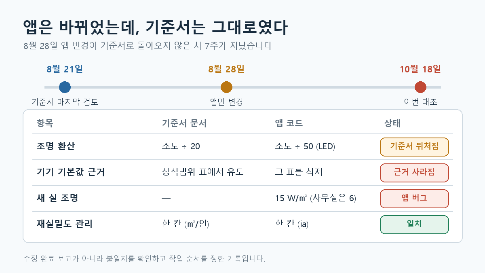

이번에는 인체발열·재실밀도(AC-007), 조명발열(AC-008), 기기부하(AC-009) 기준서와 용량계산서 앱의 설명을 대조했습니다.
이전 검토에서는 주로 기준서를 보고 앱의 차이를 찾았습니다. 이번에는 반대 방향의 문제도 있었습니다. 앱의 계산이나 표시가 바뀌었는데 기준서 문서는 이전 설명을 유지하고 있었습니다.
대조하면서 확인한 것은 네 가지입니다.
| 항목 | 확인한 내용 |
|---|---|
| 재실인원 | 부하와 환기에 쓰는 기본 인원을 한 곳에서 관리하는 방향 |
| 조명발열 | 앱의 실 유형 값은 조도 ÷ 50, 기준서 설명은 조도 ÷ 20 |
| 기기발열 | 기본값을 유도했다고 설명한 표의 출처가 확인되지 않아 표를 삭제 |
| 새 실 추가 | 사무실 조명 초기값에 옛 15W/㎡가 남아 있음 |

계산 규칙과 초기값은 별개로 남아 있었습니다
조명발열의 기존 설명은 사무실 300lx를 ÷20으로 계산해 15W/㎡를 적용하는 방식이었습니다. 앱의 실 유형 값은 LED 조명을 가정한 ÷50, 즉 6W/㎡로 변경됐습니다.
그런데 새 실을 추가하면 사무실 조명이 여전히 15W/㎡로 시작했습니다. 실 유형별 값과 새 실의 초기값이 다른 위치에서 관리되고 있었기 때문입니다.
사무실 100㎡라면 조명 항목만 600W와 1,500W로 900W 차이가 납니다. 두 계산이 각각 정상적으로 실행돼도, 어느 경로로 실을 만들었느냐에 따라 결과가 달라지는 상태입니다.
이 문제를 해결하려면 숫자 하나를 다시 입력하는 것으로 끝내지 말고, 새 실도 실 유형의 같은 규칙에서 초기값을 받아오게 해야 합니다.
기본값의 근거도 다시 확인해야 했습니다
기기발열 기본값은 앱 안의 “부하 원단위 상식범위” 표에서 유도했다고 설명돼 있었습니다. 그러나 그 표 자체의 출처를 확인하지 못해 삭제했습니다.
표를 삭제했다고 그 표에서 나온 값에 자동으로 새 근거가 생기지는 않습니다. 따라서 전기실 100W/㎡ 같은 값은 실제 장비발열과 구별되는 계획값으로 다뤄야 합니다.
이 과정에서 입력 여부를 검사하는 기능도 따로 봐야 합니다. “값이 너무 크거나 작다”는 판단에는 비교 근거가 필요합니다. 반면 “아직 입력하지 않았다”는 상태는 값의 적정성을 몰라도 표시할 수 있습니다.
이번 대조에서 정한 작업 순서
이번 기록은 수정 완료 보고가 아니라 불일치를 확인하고 작업 순서를 정한 기록입니다.
- 기준서 정리:
÷50의 가정과 한계, 기기 기본값의 근거 상태를 명시합니다. - 앱 수정: 새 실의 조명 초기값을 실 유형의 계산 규칙과 연결합니다.
- 입력 상태 확인: 기기발열의 실제 입력·계획값·미입력이 화면과 계산서에서 구분되는지 확인합니다.
- 테스트: 값을 바꾸거나 새 실을 만들 때 같은 규칙이 유지되는지 검사합니다.
- 교차 검토: 기존에 저장한 프로젝트의 결과가 어떻게 달라지는지 확인합니다.
재실인원, 조명, 기기발열은 서로 다른 계산 항목입니다. 하지만 이번에 발견한 문제는 닮아 있었습니다. 같은 판단이 코드와 문서, 또는 코드 안의 여러 위치에 나뉘어 있으면 한쪽만 바뀔 수 있다는 것입니다.
AI는 문서와 코드의 차이를 찾는 데 도움을 줬습니다. 어떤 값을 채택할지, 출처가 확인되지 않은 값을 어떻게 표시할지는 설계자가 결정해야 합니다.